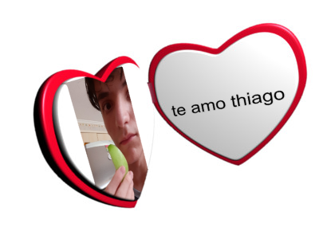

minha foto favorita dele:
1. Amo quando ele me ajuda a lavar a louça
2. Amo quando ele ri
3. Amo quando ele vem com o perfume de gengibre (?)
Tenho muitas saudades dele no momento, na verdade nem tantas assim pois vi ele ontem,
mas nao me importa pois se eu pudesse eu veria ele todo dia que nem quando íamos para escola.
A partir
daqui estou só colocando abobrinha pois quero testar coisas, heheh.